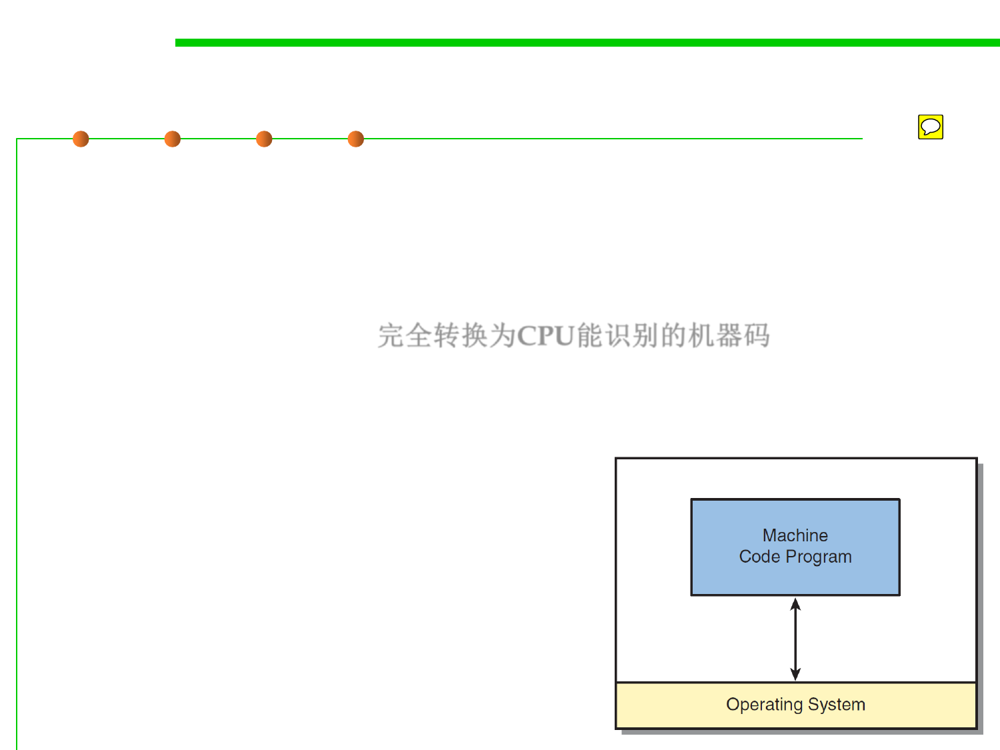

1.1 Multi-Dimensional Views of Software Construction
Executable Programs: Native Machine Code
▪ A program is loaded into memory first, and several mechanisms
exist for executing the software, depending on how much
compilation took place before the program was loaded and how
much OS supports the program requires.
▪ Native Machine Code: 完全转换为CPU能识别的机器码
– Fully converted executable program into the CPU’s native machine code.
– The CPU simply “jumps” to the program’s starting location, and all the
execution is performed purely using the
CPU’s hardware.
– While it’s executing, the program optionally
makes calls into the operating system to
access files and other system resources.
– This is the fastest way to execute code,
because the program full accesses to the
CPU’s features.